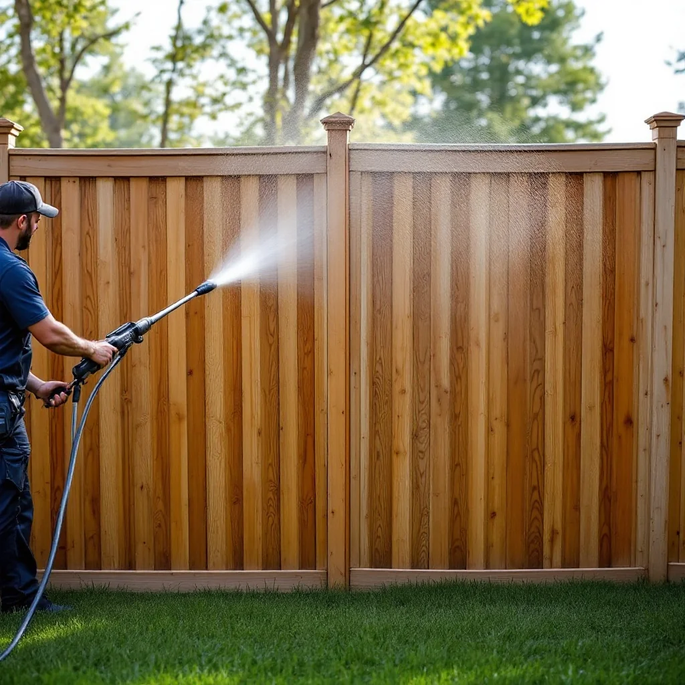

Fence Cleaning in Knoxville, TN

Restore Your Fence to Like-New Condition
Tennessee's humidity takes a toll on fences. Wood fences develop green algae, gray weathering, and dark stains. Vinyl fences get discolored and chalky. Professional fence cleaning removes years of buildup and restores your fence's original appearance.
Fence Types We Clean
- Wood privacy fences (pine, cedar)
- Vinyl / PVC fences
- Aluminum and wrought iron fences
- Chain link fences
- Retaining walls
Wood Fence Cleaning and Prep
Planning to stain or seal your wood fence? Pressure washing is the essential first step. We clean the fence thoroughly and let it dry before you apply stain, ensuring proper absorption and adhesion.
Pricing
Fence cleaning in Knoxville typically runs $125-$350 depending on length, height, and material. Standard 6-foot privacy fences (100-200 linear feet) usually cost $150-$250. See our cost guide.
Combine with deck cleaning for additional savings.